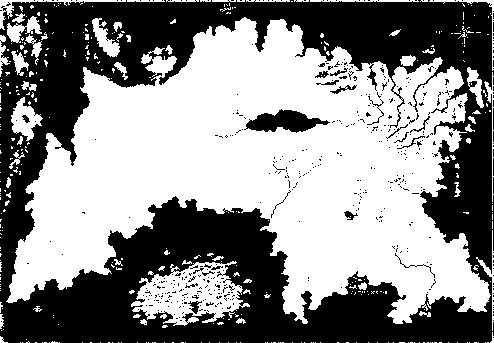
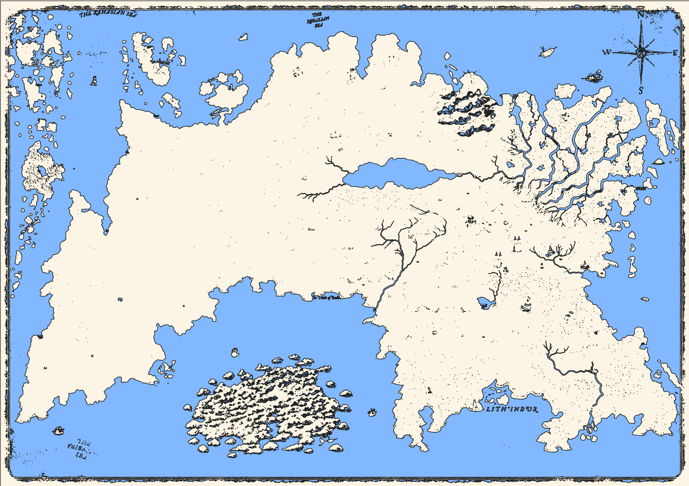

Fantasy Map to a vector polygon
Published on March 6st, 2023
A while ago I made a fantasy map for my homemade world in the tabletop game Dungeons & Dragons. This map is however a .jpg image made in a non-GIS software, and I have recently wondered if I should import the map into QGIS. The map is at a large scale and is quite detailed, so instead of having to recreate it by manually drawing the polygon, I wanted to find an easier method.
 My fantasy D&D map
My fantasy D&D map
I used a custom plugin in QGIS ('Freehand raster georeference') to rescale the image based on the hex grid scale I have on the map. As each grid is about 39 km, I used the CRS WGS 1984 Mercator and placed the map at the equator since the map was originally created without considering any CRS.
Creating a NDWI of a .jpg image
After importing the raster image in the correct scale, I wanted to create a vector polygon of the landmass of my continent. Using knowledge from remote sensing on how to calculate a NDWI (Normalized Difference Water Index) which is calculated as (G-NIR)/(G+NIR). However my map is not a Landsat 7 or 8 raster image with a NIR band, but the spectral signatures are much simpler on an image. I ended up adapting the formula to make the colour blue as dark as possible as it would be easier to isolate water and none-water bodies at a later point.
This is the formula used in raster calculator:
((Red + Green) - Blue) / ((Red + Green) + Blue)
 This is the "NDWI" I created of my fantasy map
This is the "NDWI" I created of my fantasy map
NDWI to vector data
After creating the NDWI I want to have a simple dissolved land use polygons of shapes that are either classified as water bodies or not water bodies. To do this I first needed to classify the raster layer as a binary 0 or 1, indicating it being water or not water. To do this I first checked different values of different pixels of water features. Then I opened the raster calculator and put in the formula: NDWI@1 > 0.3. The result of this looked approximately as I wanted it, but with a lot of noise. Due to the limited information of a .jpg image compared to a satellite image and the wide range of colours used in my map, some noise is almost impossible to prevent.  The classified raster image of the NDWIThe next step is creating a polygon out of the classified NDWI raster. To do this I could use the "Polygonize (Raster to Vector)" tool in QGIS. Using symbology I quickly classified the 0 and 1 on the water bodies as blue and light parchment to view the result. The output given the initial image looks pretty good. It has a lot of artefacts from raster elements like labels or symbols which are difficult to remove by other means than manual editing. However, doing some vector cleaning and editing from this output compared to having to manually draw this polygon is still a huge time saver.
 The vector result from the process
In the end, this was a small fun project. Perhaps in the future I will return to it and clean up the polygon and add more
features such as creating a DEM (Digital Elevation Model). But for anyone who has an image file they consider importing
into GIS to work with as vector data, I hope this can motivate you to give it a try.